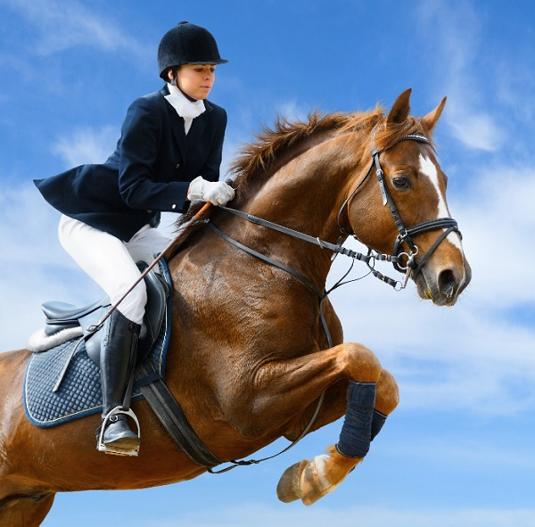
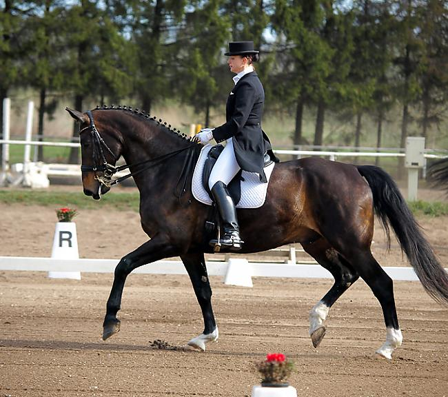

Jāšana ir sens sporta veids, kurā tiek attīstītas, pārbaudītas un vērtētas iemaņas jāšanā ar zirgiem. Šajā sporta veidā vīrieši sacenšas kopā ar sievietēm (vienīgais šāda tipa olimpiskais sporta veids). Jāšana kopš 1900. gada ir iekļauta Olimpisko spēļu programmā, sievietes Olimpisko spēļu jāšanas sacensībās piedalās kopš 1952. gada. Tajās pašlaik tiek sadalīti seši medaļu komplekti: iejādē, konkūrā (šķēršļu pārvarēšanā) un trīscīņā (visās disciplīnās gan individuāli, gan komandām)
 Ja ir interese nodarboties ar jāšanas sportu, nekad nav par vēlu sākt!
Visu informāciju varēsi atrast šeit: